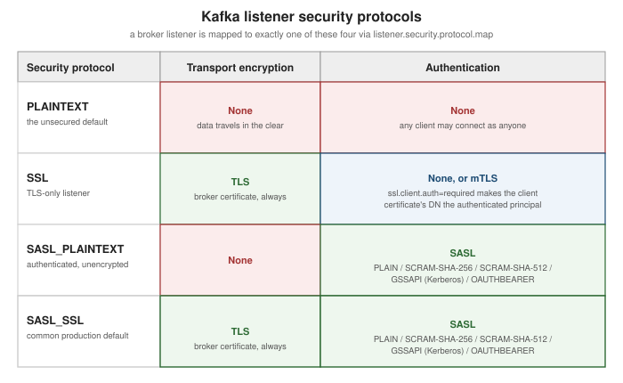

Kafka Security
|
This content was generated with the assistance of AI and should be verified against the official documentation before being relied on in production. |
Every other page in this section assumes a cluster that will let any client connect, read, and write — kafka-topics.sh --bootstrap-server localhost:9092 with no credentials at all, exactly as
Getting Started with Messaging's single-node docker run example
runs. That is fine for local development; a shared cluster needs to answer three separate questions before a
client is allowed to do anything — is this connection encrypted, who is the client, and what is it allowed to
do — which map to Kafka’s three security layers: transport encryption, authentication, and authorization. This
page covers all three, plus the operational path from an open cluster to a secured one.
Listeners and security protocols
A broker can expose more than one listener at once — each one named, bound to its own host/port, and mapped
to exactly one of four security protocols via listener.security.protocol.map:
| Security protocol | What it provides |
|---|---|
|
No encryption, no authentication — the default, and what every example elsewhere in this section uses. |
|
TLS encryption, plus certificate-based authentication when the broker is also configured to require a client certificate (mTLS — see below). |
|
SASL authentication (see below) with no transport encryption — credentials and data both travel in the clear, so this is rarely appropriate outside a fully trusted network. |
|
SASL authentication over a TLS-encrypted connection — authenticated and encrypted, and the combination most production clusters standardize on. |
# name two listeners and map each to a security protocol
listeners=CLIENT://0.0.0.0:9093,BROKER://0.0.0.0:9092
listener.security.protocol.map=CLIENT:SASL_SSL,BROKER:SSL
# which listener brokers use to replicate with each other
inter.broker.listener.name=BROKER
# the hostname/port clients are told to actually connect to, if different from `listeners`
# (e.g. behind a load balancer or NAT)
advertised.listeners=CLIENT://kafka.example.com:9093,BROKER://broker1.internal:9092A listener’s name (CLIENT, BROKER above) is an arbitrary label an operator chooses — it is
listener.security.protocol.map that says what protocol that name actually speaks, which is what lets a
cluster run, for example, an unauthenticated internal replication listener alongside an authenticated
client-facing one, both active at once. In a KRaft cluster, controller.listener.names names the listener(s)
controllers use for the Raft quorum, which must be distinct from inter.broker.listener.name and configured on
every broker even if that broker never itself exposes the controller listener. See
Apache Kafka Documentation — Listener
Configuration for the complete property reference.
TLS encryption and mutual TLS (mTLS) authentication
Any listener mapped to SSL or SASL_SSL encrypts the connection with TLS the same way any other TLS service
does — the broker presents a certificate from its keystore (ssl.keystore.location/ssl.keystore.password),
and the client validates it against a truststore (ssl.truststore.location) containing the issuing CA. That much
gives encryption but not client authentication — the broker still doesn’t know who is connecting.
mTLS closes that gap: setting ssl.client.auth=required makes the broker demand a certificate from the
client too, validating it against the broker’s own truststore, and the certificate’s distinguished name (DN)
becomes the client’s authenticated principal (User:CN=order-service,OU=payments,O=Example Corp) without any
separate credential exchange. mTLS and SASL are not combined on the same listener — a listener is either SSL
(TLS only, optionally with mTLS) or SASL_SSL (SASL authentication over TLS); a cluster that wants both mTLS
and SASL available chooses per listener, or per client population.
SASL authentication
SASL (Simple Authentication and Security Layer) is Kafka’s pluggable, non-certificate authentication
framework, enabled on SASL_PLAINTEXT or SASL_SSL listeners. Kafka ships four mechanisms out of the box:
| Mechanism | Notes |
|---|---|
|
Username/password checked against a configured (or custom, pluggable) credential store. Simplest to set up;
only safe to use over a |
|
Salted Challenge Response Authentication Mechanism — like |
|
Kerberos — authenticates against an existing Kerberos realm/KDC, the mechanism most at home in an organization that already runs Kerberos for everything else (Hadoop clusters historically being the common case). |
|
Authenticates with an OAuth 2.0 bearer token (RFC 7628) instead of a Kafka-specific credential — see
Client Credentials and Client
Authentication for how a service typically obtains one. Kafka’s default |
A broker enables the mechanisms it’s willing to accept with sasl.enabled.mechanisms (a comma-separated list — more than one may be active on the same listener at once) and, when the inter-broker listener itself uses SASL,
sasl.mechanism.inter.broker.protocol picks the one brokers use to authenticate to each other. See
Apache Kafka Documentation — Authentication
using SASL for per-mechanism configuration, including the JAAS configuration every mechanism relies on to
locate its credentials.
Authorization: ACLs and prefixed ACLs
Authentication answers who; authorization answers what that principal may do, enforced once an
authorizer is configured (authorizer.class.name, Kafka’s own metadata-log-backed StandardAuthorizer by
default). An ACL grants or denies one Principal performing one Operation (Read, Write, Create,
Describe, Alter, ClusterAction, and so on) on one Resource (a topic, consumer group, cluster, or
transactional id) from a given Host (or * for any host), managed with kafka-acls.sh:
# grant User:order-service permission to produce to the "orders" topic, from any host
bin/kafka-acls.sh --bootstrap-server localhost:9092 \
--add --allow-principal User:order-service --operation Write \
--topic orders
# grant User:reporting-team read access to every topic whose name starts with "analytics-"
bin/kafka-acls.sh --bootstrap-server localhost:9092 \
--add --allow-principal User:reporting-team --operation Read \
--topic analytics- --resource-pattern-type prefixed
# list every ACL currently granted
bin/kafka-acls.sh --bootstrap-server localhost:9092 --list--resource-pattern-type chooses how a Resource grant matches actual resource names: literal (the default)
matches only the exact name given (or every resource, for the literal wildcard *), while prefixed matches
any resource whose name starts with the given string — the analytics- grant above covers analytics-events,
analytics-clicks, and any future topic sharing that prefix, all without a separate ACL per topic. Prefixed ACLs
are what makes the naming-convention approach to multi-tenancy below practical at scale.
Multi-tenancy: naming convention + quotas
Kafka has no built-in notion of a "tenant" the way some other systems do — multi-tenancy on a shared cluster is
achieved by combining two things already covered above: a topic-naming convention that gives each tenant an
unambiguous, prefixed slice of the namespace (team-checkout.orders, team-checkout.payments,
team-fulfillment.shipments, …), and prefixed ACLs plus quotas scoped to that same prefix or to the
tenant’s principal. A tenant’s service account gets ACLs granted with --resource-pattern-type prefixed against
its own namespace prefix (so it can create and use team-checkout.* topics but touch nothing outside that
prefix) and a
produce/consume/request quota scoped to
its client-id or authenticated user, so a runaway job in one tenant’s namespace can’t starve throughput for
every other tenant sharing the same brokers. Nothing about this requires separate clusters per tenant — it is
purely a combination of the naming discipline, the ACL granularity --resource-pattern-type prefixed provides,
and per-tenant quota enforcement, all enforced by mechanisms this page and
Kafka Operations and Monitoring already cover
individually.
Adding security to a running cluster
Turning security on for a cluster that is already running unsecured in production can’t be done with a single broker restart — every client would lose connectivity the instant the old, unauthenticated listener disappeared. Kafka’s own procedure instead phases it in behind a listener that stays open throughout:
-
Open a new, secured listener alongside the existing
PLAINTEXTone (a rolling, incremental restart of each broker to pick up the added listener — the existing listener keeps serving clients the whole time). -
Migrate clients one at a time (or in batches) to connect to the new secured listener instead of the old one — no broker-side change is needed for this step, only client configuration.
-
Once every client has moved, switch inter-broker traffic to the secured listener (
inter.broker.listener.name, another rolling restart) if it wasn’t already using it. -
Once nothing depends on it any more, close the old
PLAINTEXTlistener with a final rolling restart.
A PLAINTEXT (or otherwise already-trusted) listener must stay open for the entire process so brokers and
not-yet-migrated clients can keep communicating — it is only ever removed in the last step, once nothing still
needs it. See
Apache Kafka
Documentation — Incorporating Security Features in a Running Cluster for the exact broker-by-broker sequencing
and worked examples combining SSL and SASL on separate listeners during the transition.
